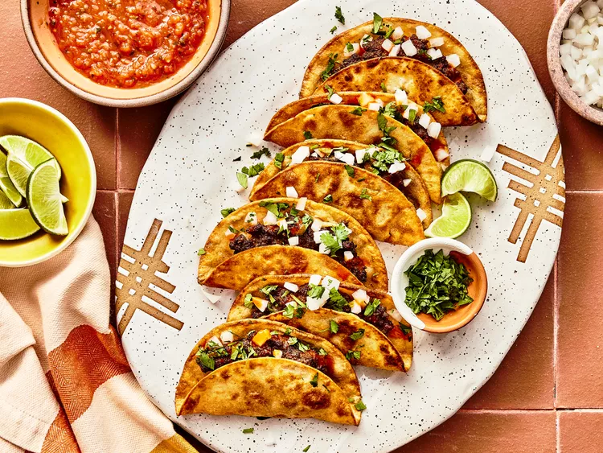

Fried Beef Tacos!

How to Make Fried Beef Tacos
You'll find a detailed ingredient list and step-by-step instructions in the recipe below,
but let's go over the basics:
Fried Beef Tacos Ingredients
Ingredients:
- 8 (5-inch) corn tortillas
- 1 pound ground sirloin
- 2 tablespoons taco seasoning
- 3/4 teaspoon kosher salt, divided
- 1/2 cup vegetable oil, or as needed for frying
- 1/2 cup minced white onion
- 1/4 cup chopped fresh cilantro
- lime wedges, for serving
- 1/4 cup salsa, or as needed, for serving
Instructions:
- Gather all ingredients.
- Lay 8 tortillas flat on a surface.
- Combine beef, taco seasoning, and 1/2 teaspoon salt in a medium bowl.
- Press 1/4 cup of beef mixture onto half of each tortilla.
- Heat 1/4-inch of oil in a high-sided skillet over medium heat until shimmering.
Working in batches, carefully add one taco at a time, flat, to the hot oil.
- Hold empty side of the tortilla with a pair of tongs,
and fold over beef filling once the shell is softened, about 5 seconds.
- Cook, turning once, until shell is golden brown and beef is no longer pink in the center,
30 seconds to 1 minute per side.. An instant-read thermometer
inserted into the center should read at least 160 degrees F (70 degrees C).
- Transfer to a paper towel-lined plate, and sprinkle with remaining 1/4 teaspoon salt.
- Serve immediately topped with onion and cilantro.
Serve with lime wedges, salsa, and hot sauce.
hope you enjoy this recipe!
Top
Back to home page